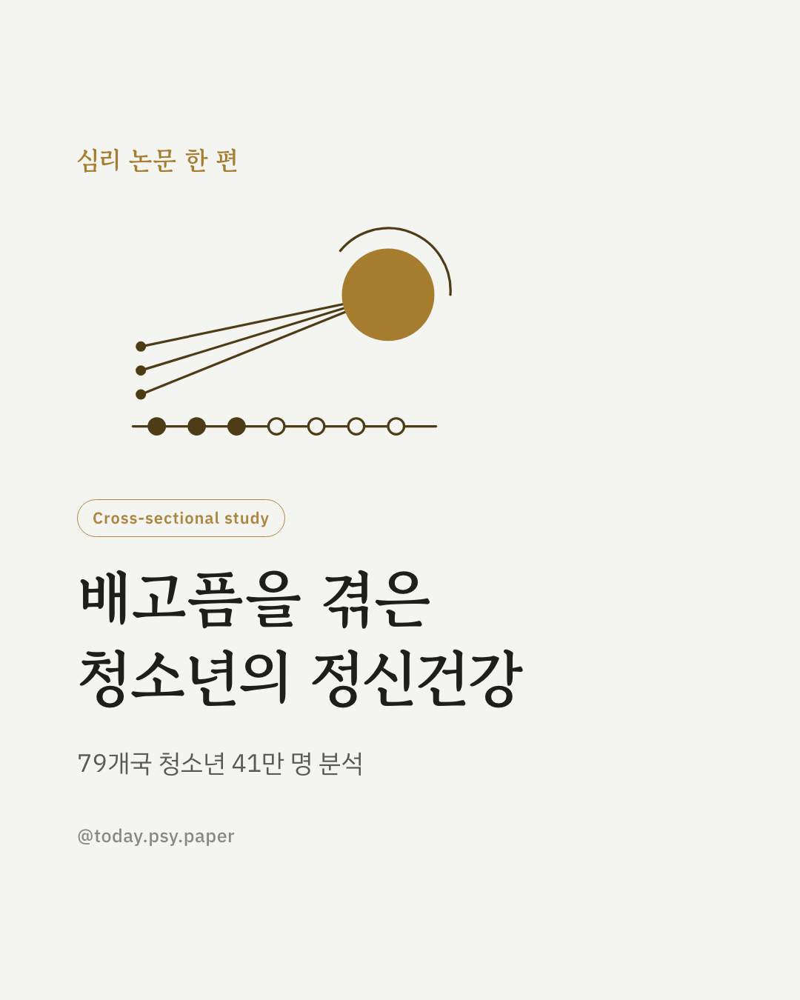
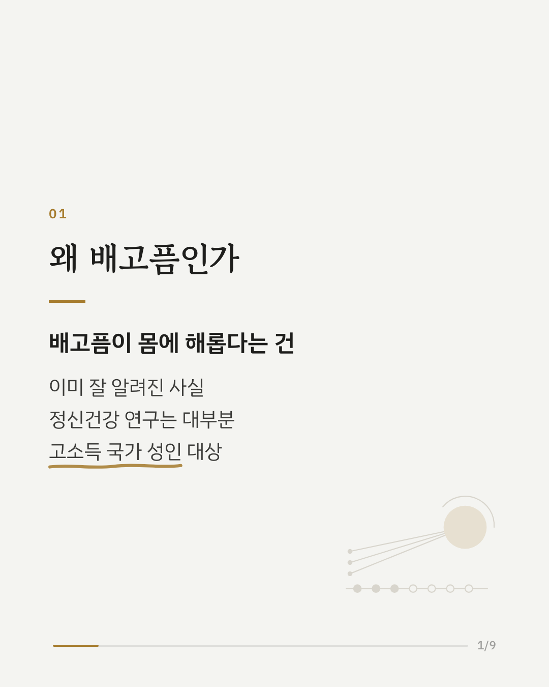
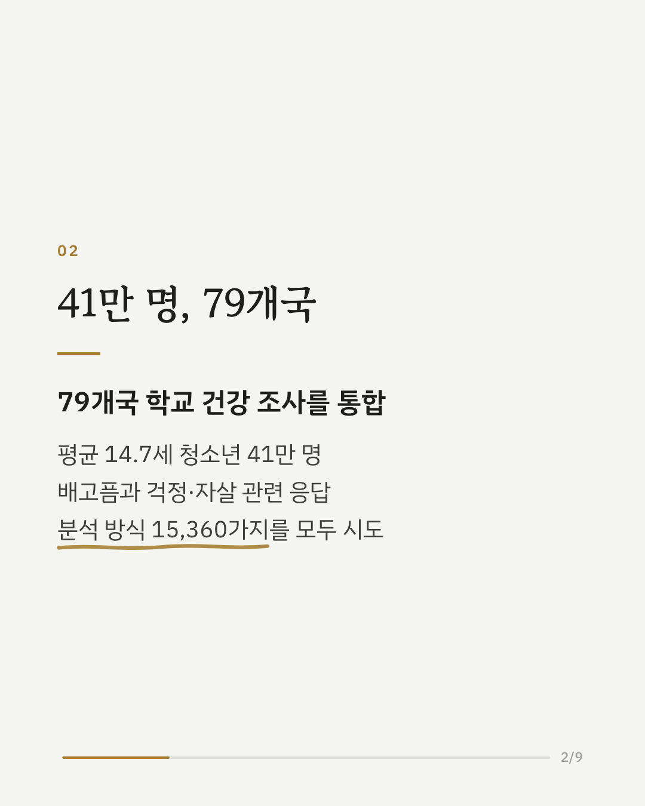
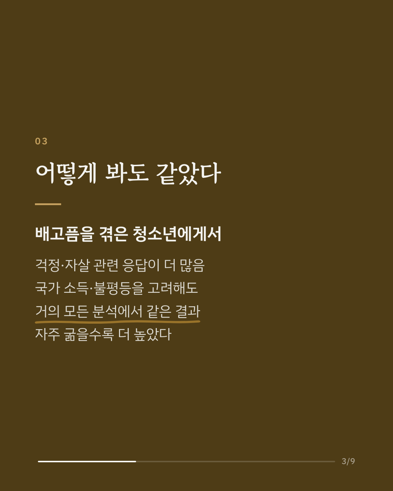
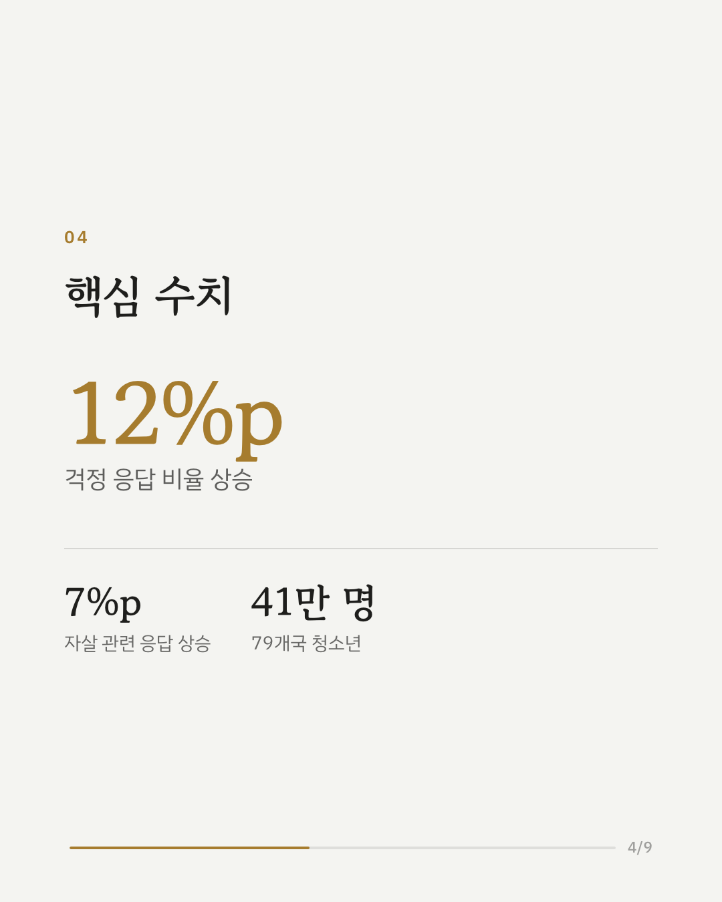
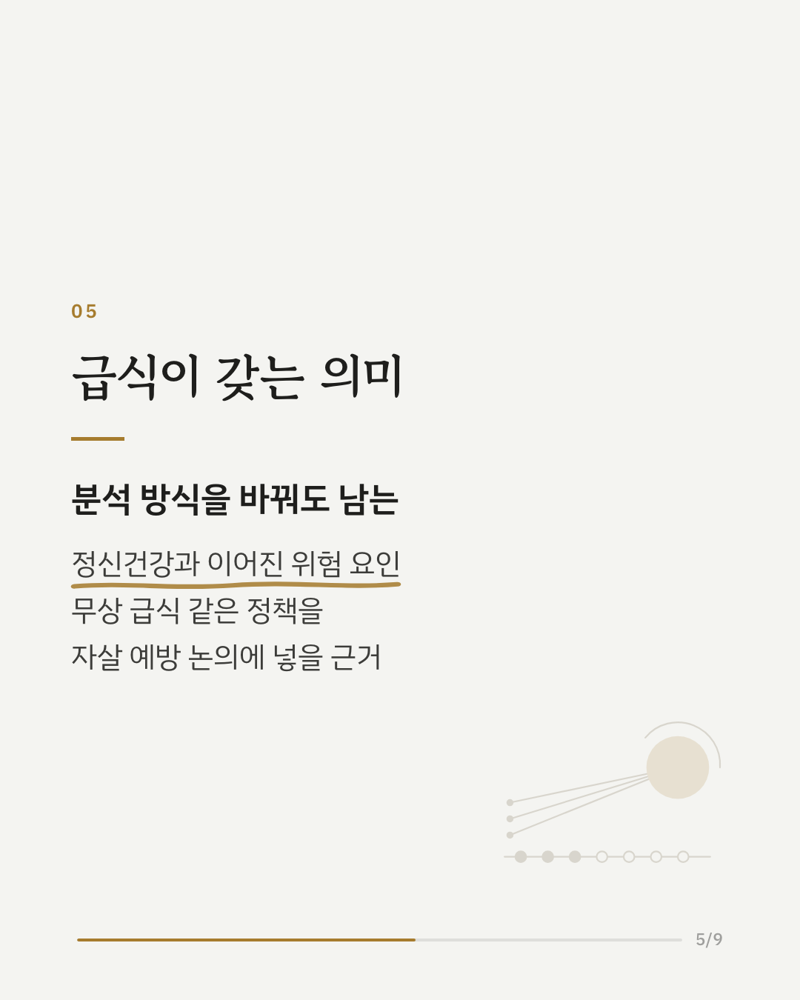
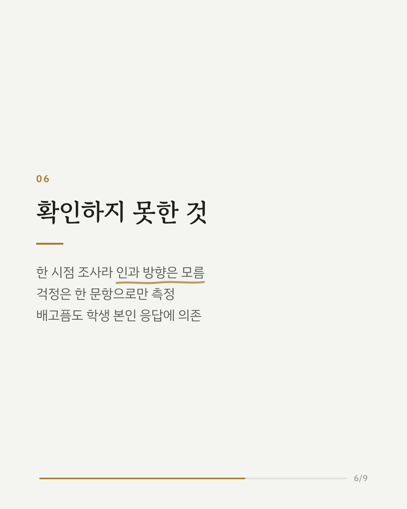
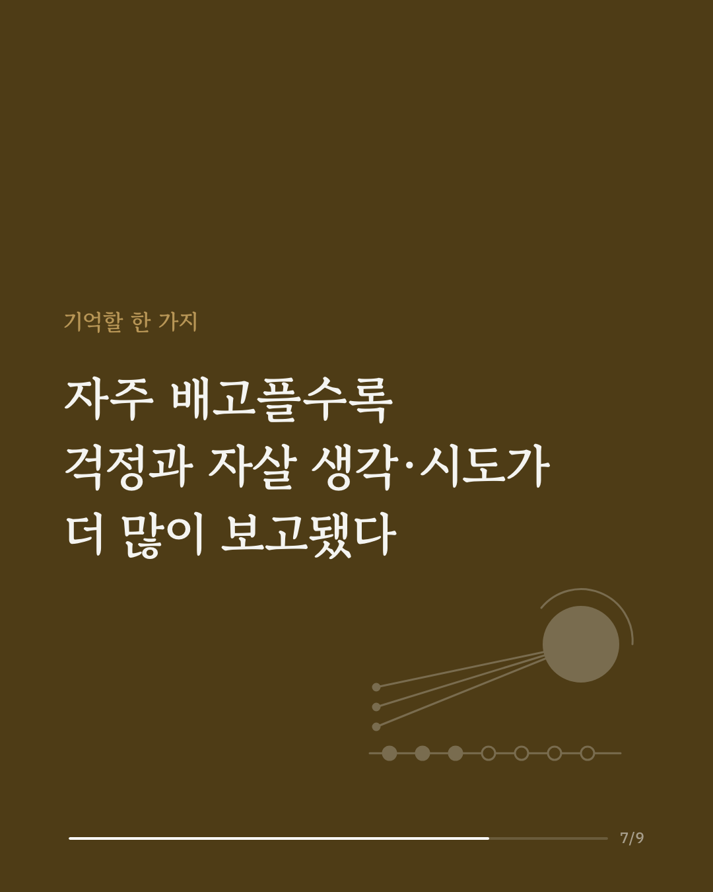
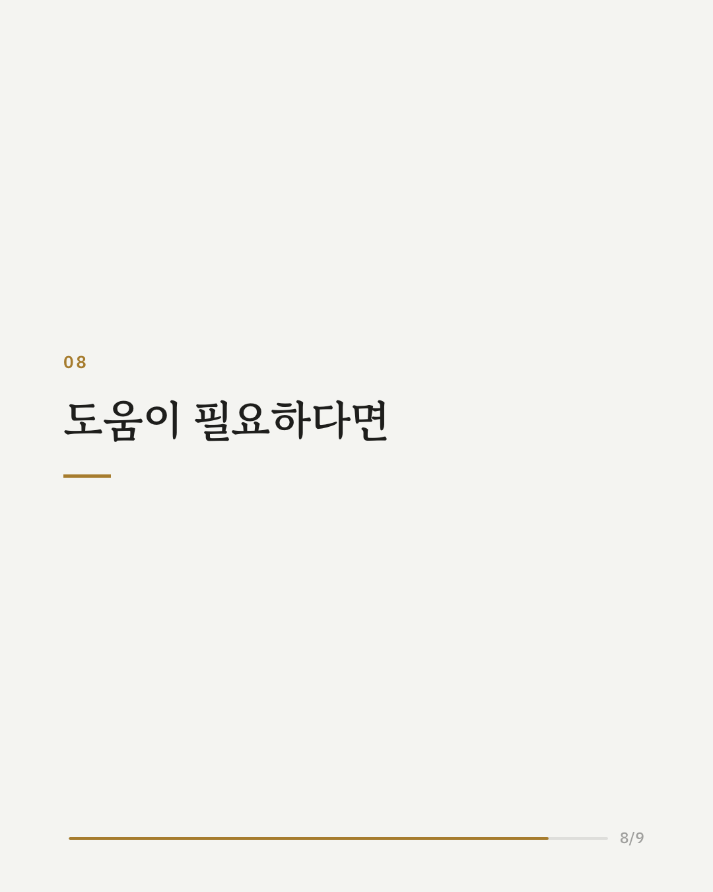
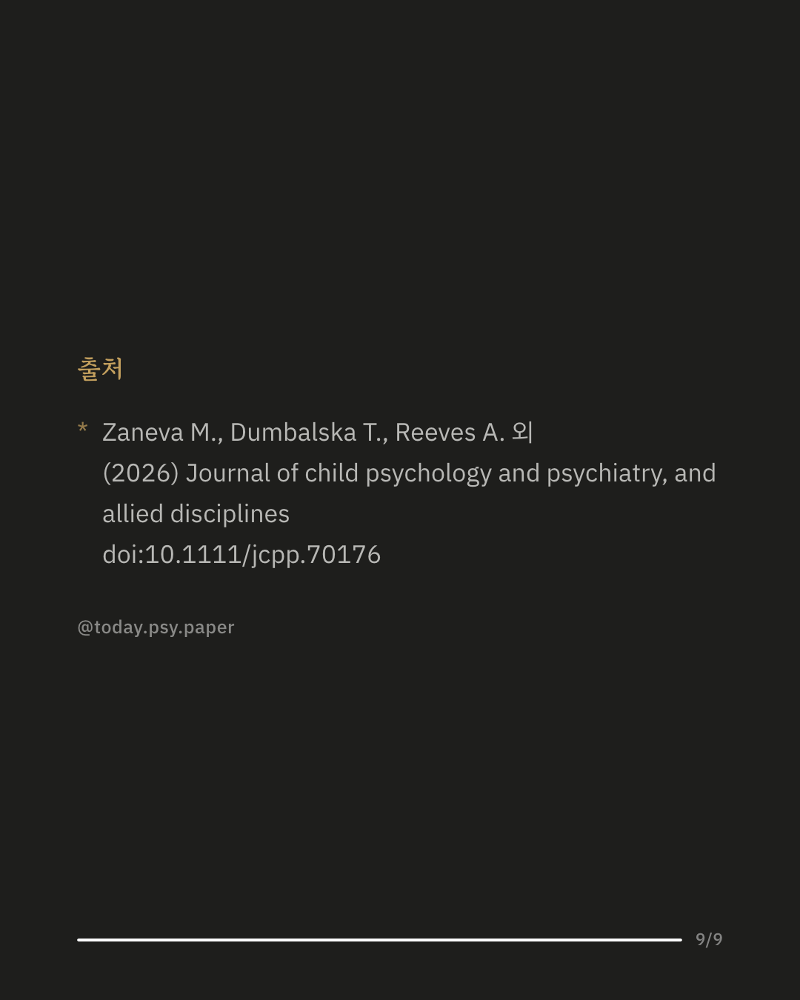

배고픔은 몸에만 영향을 주는 게 아닙니다. 79개국 청소년 41만 명의 자료로 배고픔과 청소년 정신건강, 특히 걱정과 자살 관련 생각·행동의 관계를 살펴본 연구입니다. 연구진은 분석 방법을 하나만 고르지 않고, 표본 선택·통제 변수·변수 정의를 바꿔 가며 15,360가지 방식으로 분석했습니다. 어떤 방식에서든 배고픔을 겪은 청소년은 걱정을 보고한 비율이 약 12%p, 자살 관련 응답 비율이 약 7%p 높았습니다. 국가의 소득 수준과 불평등을 고려해도 결과는 같았고, 배고픔을 자주 겪을수록 수치도 더 높았습니다. 연구진은 무상 급식이나 지역 식사 지원 같은 인구 단위 정책이 청소년 정신건강과 자살 예방에 중요하다고 봤습니다. 다만 한 시점에 실시한 조사라 배고픔이 정신건강을 나쁘게 만든 것인지, 다른 요인이 함께 작용한 것인지는 알 수 없습니다. 출처: Journal of Child Psychology and Psychiatry (2026), 'Hunger as an uncontroversial predictor of poor adolescent mental health: evidence from a multiverse analysis of 410,213 adolescents across 79 countries' DOI: 10.1111/jcpp.70176 혼자 견디기 어려운 마음이 든다면 자살예방상담전화 109, 청소년상담전화 1388에서 24시간 이야기를 나눌 수 있습니다. #청소년정신건강 #자살예방 #식량불안 #결식아동 #청소년심리 #정신건강정보 #심리학연구 #논문리뷰
python3 publish.py 42227940